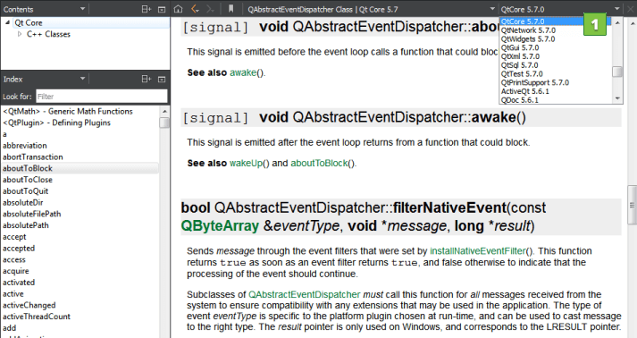
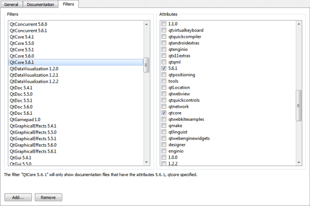

Filter documentation
You can filter the documents displayed in the Help mode to find relevant information faster. Select a filter from a list of filters. The contents of the Index and Contents view in the sidebar change accordingly.

Add filters
You can define your own filters to display documentation for a set of Qt modules and versions.
To add filters:
- Select Preferences > Help > Filters.

- Select
 to add a new filter in the Add Filter dialog.
to add a new filter in the Add Filter dialog. - In the Filter name field, enter a name for the filter, and then select OK to return to the Filters tab.
- In the Components field, select the Qt modules to include in the filter.
- In the Versions field, select the Qt versions to include in the filter.
- Click OK.
- In the Help mode, select the filter in the list of filters to see the filtered documentation in the sidebar.
Change filters
To modify the selected filter, add and remove Qt modules and versions, and then select Apply.
To rename the selected filter, select Rename.
Remove filters
To remove the selected filter select  .
.
See also Get help.